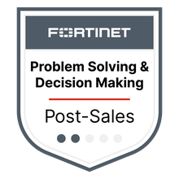
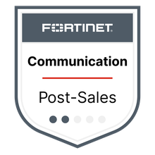

Manoel Dias Martins Jr
Network Security Engineer
20+ years across systems, networking and cybersecurity — from Windows Server & Active Directory environments to enterprise network security at Fortinet. Based in Lisbon, Portugal.
01. Professional Experience
-
Cyber Security Engineer
CurrentFortinet · Full-time
Nov 2022 — Present · Lisbon, Portugal
Deliver network security engineering and support across FortiGate, FortiManager and SD-WAN deployments, applying enterprise firewall administration, threat prevention and secure networking best practices for global customers at a leading cybersecurity vendor. Fortinet NSE-certified across secure networking and cybersecurity fundamentals, with hands-on Linux systems experience.
-
Network Administrator
New Tecnologia · Full-time
Sep 2020 — Oct 2022 · Cachoeiro de Itapemirim, Brazil
Deployed, configured and troubleshot enterprise network infrastructure (Huawei, Mikrotik) supporting ISP and Autonomous System environments. Implemented VLAN segmentation, STP, PPPoE, OSPF and iBGP routing to strengthen network performance, availability and security. Completed Nic.br's Best Practices for Autonomous Systems program, applying ISP-grade hardening standards.
-
Chief Executive Officer
Manoel Martins Tecnologia · Self-employed
Mar 2020 — Oct 2022 · Cachoeiro de Itapemirim, Brazil
Founded and led an independent IT services practice, delivering systems and network administration, technical support and infrastructure consulting directly to business clients — owning operations, client relationships and service delivery end-to-end.
-
System Administrator
Prodest · Full-time
Jul 2008 — Jul 2017 · Espírito Santo, Brazil
Administered 5 Active Directory forests with 2–3 Domain Controllers each, ensuring identity, access and infrastructure reliability across a public-sector environment. Designed and implemented new Active Directory domain architectures. Microsoft Certified Systems Administrator (MCSA) and Systems Engineer (MCSE); presented internally on Windows Server 2003 vs. 2008 migration strategy.
-
System Administrator
R7 Tecnologia · Full-time
Jan 2004 — Jul 2008 · Espírito Santo, Brazil
Administered Microsoft Windows Server environments and managed a Linux-based perimeter firewall (IPCop), laying the technical foundation for a long-running career in network security and IT infrastructure. Provided technical support and ensured system reliability for end users and business operations.
02. Skills
Security & Networking
Systems Administration
Automation & DevOps
Platforms
03. Certifications
Sourced from Credly and LinkedIn. Most expired credentials omitted; expired badges are labeled accordingly.

Problem-Solving & Decision-Making Issued May 2, 2024
Communication Skills Issued Aug 2, 2023- FortiGate 7.4 AdministratorIssued Sep 12, 2025
- FortiManager 7.4 AdministratorIssued Sep 5, 2025
- SD-WAN 7.2 ArchitectIssued May 15, 2024
- Customer Centricity — Post-Sales L2 EssentialsIssued Aug 2, 2023
- Enterprise Firewall 7.0 AdministratorIssued Mar 29, 2023
- FortiGate 7.0 AdministratorIssued Feb 8, 2023
- Certified Fundamentals — CybersecurityExpires Sep 12, 2027
- NSE 1 Certified in CybersecurityExpires Jul 24, 2028
- NSE 2 Certified in CybersecurityExpires Jul 24, 2028
- Getting Started in Cybersecurity 1.0Issued Nov 4, 2022
- Introduction to the Threat Landscape 1.0Issued Nov 3, 2022
- Designing Cisco Security InfrastructureIssued Jul 9, 2026
- Understanding Cisco Network Automation EssentialsIssued Jun 26, 2026
- Programming for Network EngineersIssued Oct 6, 2025
- DevNet AssociateIssued Jun 10, 2022
- CCNA: Switching, Routing, and Wireless EssentialsIssued May 14, 2022
- CCNP: Core NetworkingIssued Feb 23, 2022
- Introduction to IoTIssued Dec 1, 2021
- Networking Academy Learn-A-Thon 2022Issued Apr 29, 2021
- Introduction to CybersecurityIssued Apr 11, 2021
- Cybersecurity EssentialsIssued Mar 26, 2021
- Understanding of Cisco Network DevicesIssued Feb 24, 2020
- MCSE — Microsoft Certified Systems Engineer2003
- MCSA — Microsoft Certified Systems Administrator2003
- MCP — Microsoft Certified Professional2003
- LPI MemberLinux Professional Institute